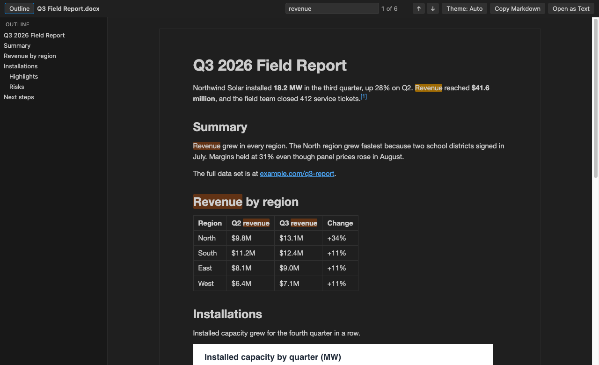
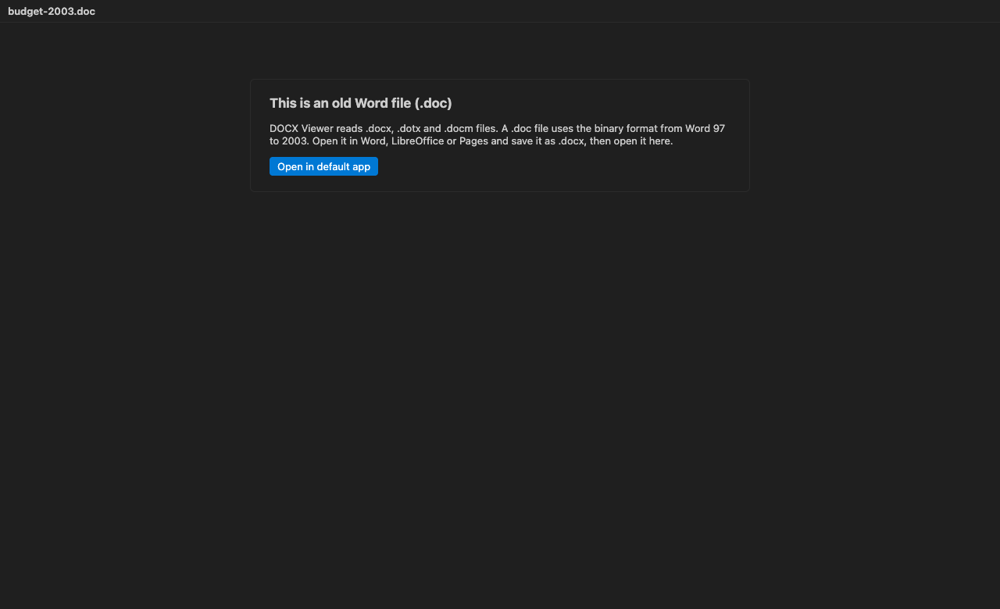

DOCX Viewer & Word Viewer with Dark Mode
DOCX Viewer & Word Viewer with Dark Mode, a VS Code extension by Zovo
Open Word .docx files right in VS Code and read them in dark mode, with an outline, search and tables, without leaving the editor.
Free, MIT license. Needs VS Code 1.90.0 or newer. Extension ID zovo.docx-viewer-vscode, version 0.1.2.

Real output. The webview HTML and media/ files from this extension rendered the sample document test/fixtures/sample.docx in headless Chrome, with VS Code's Dark Modern colors passed in as --vscode-* variables. npm run screenshot makes it again.
- Read specs, contracts and reports next to your code. The page follows your VS Code theme, or switch to white paper with one click.
- Find things fast. Search shows a match count, and the outline jumps to any heading.
- Get the text out. Copy the whole document as Markdown with tables and footnotes, or open its plain text in a new editor.
Quick start
- Install DOCX Viewer.
- Click any
.docxor.dotxfile in the Explorer. It opens as a read-only preview. PressCtrl+F(Cmd+Fon macOS) to search.
No .docx at hand? Run "DOCX Viewer: Open Sample Document" from the Command Palette.
Questions people ask
Is DOCX Viewer & Word Viewer with Dark Mode free?
Yes. DOCX Viewer & Word Viewer with Dark Mode is free and MIT licensed.
How do I install DOCX Viewer & Word Viewer with Dark Mode?
Click "Install in VS Code" above, or search for zovo.docx-viewer-vscode in the Extensions view.
What it shows
Headings, paragraphs, bold, italic, underline and strikethrough. Bulleted and numbered lists, including nested ones. Tables with merged cells. Images inline (PNG, JPEG, GIF, BMP and WebP). Footnotes and endnotes, with links between the reference and the note. Hyperlinks, which open in your browser.
It reads .docx, .dotx (templates) and .docm files. Macros in .docm files never run. The viewer only reads the text and images.
An old binary .doc file opens to a short message that explains the format and offers to open it in your default app. A password-protected .docx gets a similar message, since Word stores those in an encrypted container.



Commands
| Command | What it does |
|---|---|
| DOCX Viewer: Find in Document | Puts the cursor in the search box (Ctrl+F / Cmd+F) |
| DOCX Viewer: Copy as Markdown | Copies the whole document as Markdown |
| DOCX Viewer: Open as Text | Opens the plain text in a new untitled editor |
| DOCX Viewer: Open as Markdown | Opens the Markdown in a new untitled editor |
| DOCX Viewer: Open in Default App | Opens the file in Word, Pages or LibreOffice |
| DOCX Viewer: Open Sample Document | Opens a short sample report |
"Copy as Markdown" and "Open as Text" are also in the Explorer right-click menu for .docx files, so you can grab the text without opening the preview.
In the search box, Enter goes to the next match and Shift+Enter to the previous one. Esc clears it.
Settings
| Setting | Default | Meaning |
|---|---|---|
docxViewer.theme | auto | auto follows VS Code, light shows white paper, dark a dark page |
docxViewer.maxFileSizeMB | 50 | Bigger files ask before they open |
docxViewer.maxImageSizeMB | 5 | Bigger images show a placeholder instead |
docxViewer.maxTotalImagesMB | 40 | After this many MB of images, the rest show placeholders |
docxViewer.askForRating | true | Ask one time for a Marketplace rating, after 5 files and 2 days. Turn it off with false |
Big files
The converter runs in a worker thread with a memory cap and a 60 second limit, so a huge or broken file can't freeze VS Code. The page fills in from the top in chunks of about 200 KB of HTML, and you can read the first screen while the rest arrives. A test document of about 300 pages (97,000 words and 500 copies of one image) converted in about 1 second on an Apple M3 Pro.
Privacy
DOCX Viewer works offline. It makes no network calls and sends no telemetry. The webview runs under a strict Content Security Policy with no remote scripts, and the document HTML is rebuilt from an allowlist with all text escaped before it reaches the page. Remote images, scripts and javascript: links in a document are dropped.
Limits
- It's a viewer. It can't edit or save a document.
- Layout is simplified. Page size, margins, headers, footers, columns, text boxes, fonts and colors from Word are not shown. The text reads like a clean web page, not like a printed page.
- Charts, SmartArt and equations don't show. EMF, WMF and TIFF images show a placeholder. Tracked changes show the current text, and comments are left out.
- Search finds text inside one formatting run. A word whose letters have mixed formatting may not match.
- In Markdown, images become placeholder links such as
to keep the text small.
Credits
The .docx conversion uses mammoth (BSD-2-Clause). See THIRD-PARTY-NOTICES.md for every bundled package and its license.
License
MIT
More viewers by Zovo
- Context Drift finds stale facts in AGENTS.md, CLAUDE.md and other agent rule files.
- PDF Viewer & Reader with Dark Mode reads PDFs with a dark mode, search, an outline and thumbnails.
- CSV, Excel & Parquet Viewer opens Parquet, Excel and CSV files as a sortable, filterable table.
- HDF5 & NetCDF Explorer browses groups, variables and attributes in scientific data files.
- PPTX Viewer for PowerPoint shows PowerPoint slides, thumbnails and speaker notes.
- Skill Shelf lists, checks and toggles the Agent Skills that Claude Code, Codex and Cursor load.
- Tensor Viewer shows NPY, NPZ, Safetensors and GGUF tensors with stats and heatmaps.
Install DOCX Viewer & Word Viewer with Dark Mode
Click the button to open VS Code and install it, or press Ctrl+P (Cmd+P on macOS) in VS Code and run ext install zovo.docx-viewer-vscode.
Free, MIT license. Needs VS Code 1.90.0 or newer. Extension ID zovo.docx-viewer-vscode, version 0.1.2.
Source code and issues are on GitHub.